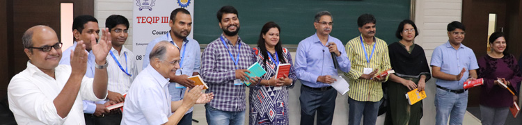

ENT Courses
The entrepreneurship courses can be tagged as either Minor or Institute Elective. B.Tech students can start taking DSSE courses from second year onward; those who complete a minimum of 30 credits receive an additional degree of B.Tech (Minor) in Entrepreneurship.
The foundation course ‘Introduction to Entrepreneurship’ is the most popular among students. A few relevant courses offered in other departments are also recommended as electives, depending on the industry sector of interest to the aspiring entrepreneurs. All courses employ an interactive and collaborative pedagogy, using case discussions, field assignments and team projects.
Courses offered by DSSE faculty are listed here.
Introduction to Entrepreneurship
This activity-oriented foundational course gives students an overview of the Entrepreneurial process and Start-up creation.
Learning Outcomes:
- Overview of Innovation & Entrepreneurship Process
- Opportunity Identification & Idea Generation
- Customer Discovery and Value Proposition
- Technology Evolution and Business life-cycles
Course Topics
- Role of innovation and entrepreneurship
- What it takes to be an entrepreneur
- Business fundamentals
- Leadership & team building
- Business model canvas
- Opportunity identification and evaluation
- Basics of new venture creation
- Customer discovery and customer value proposition
- Marketing and Go-to-Market
- New product development – crossing the chasm
- New product development – developing proof-of-concept
- Technology evolution and business life cycles
- Basics of IP for entrepreneurs
- Entrepreneurial finance
- Pitching
Developing the Proof-of-Concept
It provides hands-on experience in fabricating a basic prototype of an innovative product.
Learning Outcomes:
- Hands-on approach to model building
- Prototype design approaches
- Working prototype
- Prototype testing
Course Topics
- Knowledge-based introduction to patterns (hands-on activity)
- Pattern perception and recognition (hands-on activity)
- Pattern generation and exploration (hands-on activity)
- How to make a presentation and portfolio
Marketing & Finance for Entrepreneurs
This course is focused on critical Marketing and Finance skills required for the entrepreneurial journey from Idea to IPO.
Learning Outcomes:
- Understanding why start-ups succeed or fail
- Customer problem identification & market assessment
- Customer value proposition & solution design
- Start-up financing
Course Topics
- Self assessment
- Team formation
- Customer problem and market sizing
- Customer persona
- Customer value proposition
- Minimum viable product
- Customer validation
- Branding and advertising plan
- Pricing plan
- Go-to-Market and After-Market plan
- Sales strategy & capability
- Basics of accounting terminology
- Financial statements
- Financial projections and break-even analysis
- Correlation
- Corporate finance basics
- Start-up finance: sources
- Start-up finance: fundraising
- Investor pitching
Managing Innovation and IP for Techpreneurs
This course shows how a systematic approach will help budding entrepreneurs to track technology trends.
Learning Outcomes:
- Novel problem-solving approaches
- Patentability of an idea
- Patenting process and methodology
- IP management and patent commercialization
Course Topics
- Innovation through the ages
- Technology lifecycle
- Analysis of Innovation
- Opportunity Identification
- Challenge framing
- Problem solving approaches
- Solution validation
- Business model exploration
- Fundamentals of IP
- Patent basics
- Patent analytics
- Role in R&D and business planning
- Other IPR
- Patents to profits
- IP asset management
- Innovation culture
Technology Venture Creation
This course is a capstone course to create a complete business plan.
Learning Outcomes:
- Ideation to market launch
- Business model canvas
- Analyze business models
- Product development plan
Course Topics
- Opportunity assessment
- Assessing technology ideas in terms of market opportunity
- Market validation
- Market research & evaluation
- Customer discovery
- Identifying the customer need and the right target customers
- Product development plan
- Product validation
- Go-to-Market planning
- Business model analysis
- Early and later stage financing of start-ups
- Management of intellectual property
Developing a Proof-of-Concept-Advanced
This course is focused on product development and exploring the possibility of commercializing a technology idea by creating a minimum viable product.
Learning Outcomes:
- Advanced prototype
- Prototype to product
- Product commercialization
- Prototype validation
Course Topics
- Enhance/improve/extend features of product developed
- Generate an effective Go-to-Market strategy
- Obtain customer feedback and validation
- Explore the possibility of commercializing the technology idea
Tech Electives
These elective courses offered by faculty in other departments are recommended for students pursing entrepreneurship in specific fields.
Agro-based Industries: Design and Case Studies
It is offered by the Centre for Technology Alternatives for Rural Areas.
Innovation by Design
It is offered in IDC School of Design, which takes students through the process of design, including creative problem-solving techniques.
Collaborative Engineering
It is offered in the Mechanical Engineering department and deals with medical device innovation.
Entrepreneurship in Materials Engineering
It is offered in the Department of Metallurgical Engineering and Material Science.
Workshops
The School partners with several other institutes (such as NUS Singapore and TUB Germany) and organizations (such as Asian Universities Alliance) for exchange visits of faculty and students, and collaborative training programs related to innovation and entrepreneurship.
This program provides a first-hand multi-cultural exposure to concepts of innovation, incubation and entrepreneurship through a series of classroom lectures and field visits for the participants.
As a part of this program, DSSE team organized a week-long immersion in IIT Bombay during 1-7 July 2019 for 18 students from eight AUA Universities including Nazarbayev University, University of Colombo, Seoul National University, University of Tokyo, University of Indonesia, United Arab Emirates University, University of Malaya and IIT Bombay. They visited Biomedical Engineering & Technology Innovation Centre, SINE business incubator, Proof-of-Concept Lab, Tinkerers’ Lab and Tata Centre for Technology & Design in IITB. Field visits included IT industry leader Tata Consulting Services and a start-up company Drona Aviation, as well as city tour of Mumbai. The lecture sessions covered innovation trail, business fundamentals, new product development, business model canvas, marketing, creativity, communication and business plan pitching. The participants worked in teams to develop a business plan on a hypothetical product idea.
CE Program
DSSE conducts executive education programs for working professionals to update their knowledge and skillset in critical aspects of innovation and entrepreneurship.

This is meant for teachers, innovation/incubation managers and administrators from academic institutes to learn about entrepreneurship courses and programs for possible implementation in their institutions.
They learn the best practices of translational research, product innovation and business incubation from experienced faculty and industry leaders. Visits are arranged to different inter-disciplinary centres developing innovative products and technologies. Participants also get a first-hand exposure to the entrepreneurial ecosystem in IIT Bombay, by interacting with startup teams working on live projects. The first program was organized during 14-18 March 2017, under the aegis of TEQIP, Ministry of HRD, New Delhi. It benefitted over 50 participants, most of them teachers at technical institutes across the country. The second program was organized during 8-12 July 2019. A one-day version of the program, called INV.ENT was organized on 31 Jan 2020.